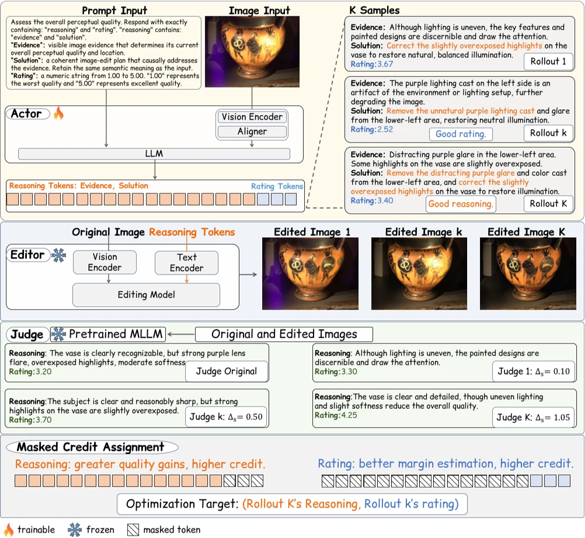

MR-IQA-2: Faithful Image Quality Reflection via Fine-Grained Credit Assignment
MR-IQA-2 improves blind image quality assessment by separately supervising reasoning and ratings, using visual editing and judging to make reasoning more faithful.
- Multimodal Foundation Models
- Vision-Language Models
- Multimodal Large Language Models